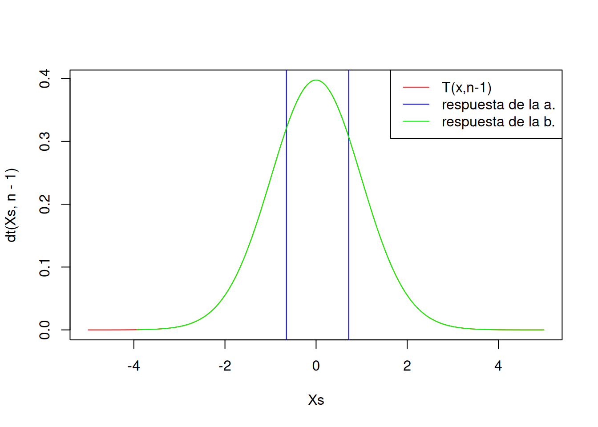
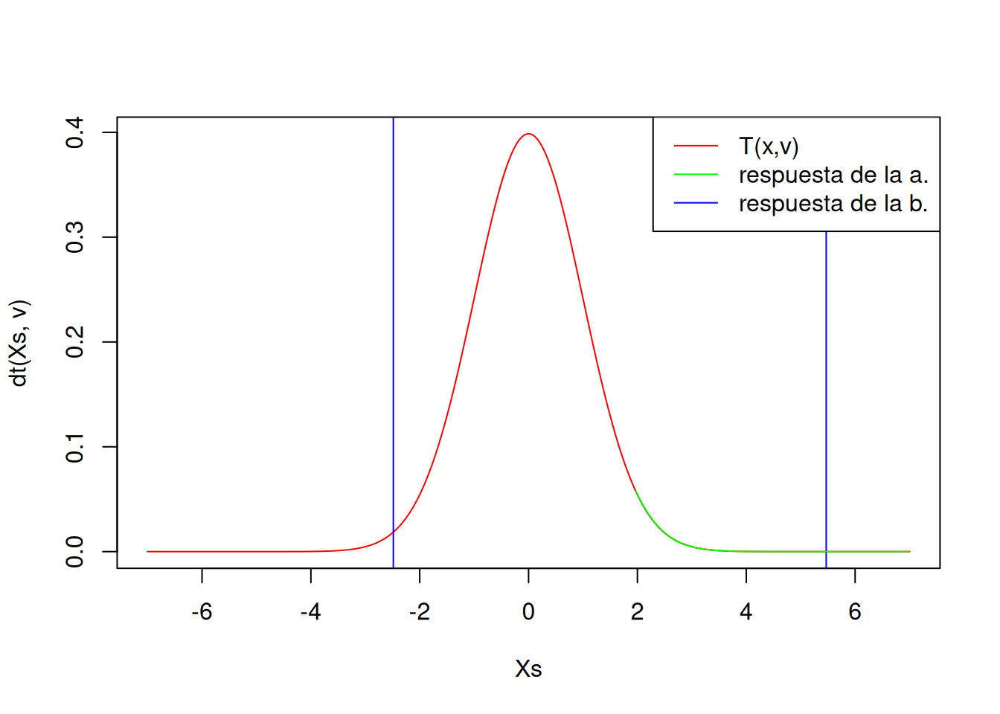

librerias <- c("dplyr", "readr", "DBI")
for (paquete in librerias) {
if (!require(paquete, character.only = TRUE)) {
install.packages(paquete)
}
library(paquete, character.only = TRUE)
}Proyecto-Spotify
Members
 Arturo Magno |
 Valentin Quezada |
 Enrique Flores |
host <- "aws-0-us-east-1.pooler.supabase.com"
db_name <- "postgres"
user <- "postgres.ssbtsqwpnmqovabbjzsc"
port <- 5432
db_password <- "giApLgnkOSm2p0yR"
con <- DBI::dbConnect(RPostgres::Postgres(),
dbname = db_name,
host = host,
port = port,
user = user,
password = db_password)DF <- dbReadTable(con, "users")
head(DF) spotify_id study_center age
1 c7c8a13cb77869d32aeccd781e5fd8b1 50287e9c14b5fb7073aa8d9c3321b520 23
2 10a2f6d668943fa99e9a01cefd506e3f 82d4187d9e6bbd60a8eeccbdcca724a6 26
3 15deb54db6a0f7aa2be02d2b634c9724 c1b9d67d881dbd78564ce95b3b805e3e 28
4 1d0950208bf5b4028cc6526e9db0522e bd13ace4eff0adc6e9ea9f96aca5299c 32
5 c46c5724a2c9fb23b3e149dd64ee9b24 8d0e19d436b791a5834fc3e359569879 38
6 37bce5246ffac5f4706c0f3bfa048726 44b90e8555a7a07109e877247b1e7bb4 34
district percieved_variety average_danceability
1 San Martín de Porres very high 0.400577
2 El Agustino none 0.962366
3 El Agustino low 0.554600
4 Surquillo high 0.981682
5 Chaclacayo low 0.908067
6 Comas none 0.302136
average_listened_artists percieved_favourite_gender average_loudness
1 0.7390380 disney -36.97920
2 0.4737040 alt_rock -35.28200
3 0.0278466 turkish -5.91593
4 0.5923100 spanish -45.37220
5 0.4919030 electro -15.86410
6 0.6602230 funk -46.49590Caso de Estudio #1
Distribución de la media muestral de ‘danceability’ para los encuestados entre 15 a 25 años.
El objetivo del primer caso de estudio es evaluar la variable ‘danceability’ en encuestados entre las edades de 15 y 25 años. Tenemos como dato la media de la población, \(\mu\), que podemos calcular usando RStudio. Luego, filtramos la base de datos para los encuestados que tienen entre 15 y 25 años. Esta será nuestra muestra, y entonces buscamos su tamaño (n) y la desviación muestral (s).
mu = mean(DF$average_danceability)
DFD <- filter(DF,age >= 15 & age <= 25)
n = sum(complete.cases(DFD))
s = sd(DFD$average_danceability)
paste("mu =", mu)[1] "mu = 0.504220946603333"paste("n =", n)[1] "n = 103"paste("s =", s)[1] "s = 0.292165078787245"Entendemos para este caso que, como el tamaño de muestra es menor a 30, la media muestral se distribuye con una T-student de \(n-1\) grados de libertad. Con esta información, podemos ahora resolver los siguientes incisos:
a. ¿Cuál es la probabilidad de que la media muestral sea mayor a 0.50?
\[P(\overline{x}>0.50)\]
\[P\left(\frac{\overline{x}-\mu}{\frac{s}{\sqrt{n}}} > \frac{0.50-\mu}{\frac{s}{\sqrt{n}}}\right)\]
\[P\left(T(n-1)>\frac{0.50-\mu}{\frac{s}{\sqrt{n}}}\right)\]
a <- (0.50 - mu)/(s/sqrt(n))
paste("La probabilidad de que la media muestral sea mayor a 0.50 es", pt(a,n-1, lower.tail = FALSE),".")[1] "La probabilidad de que la media muestral sea mayor a 0.50 es 0.558140241483883 ."b. ¿Será posible determinar un intervalo de confianza para la media muestral? Consideremos un nivel de confianza del 95%.
nc = 0.95
alpha = 1 - nc
test <- t.test(DFD$average_danceability, conf.level = nc)paste("El intervalo de confianza para la media poblacional es [", test$conf.int[1], ";", test$conf.int[2], "] con un nivel de confianza del 95%.")[1] "El intervalo de confianza para la media poblacional es [ 0.400098973143252 ; 0.514300222565486 ] con un nivel de confianza del 95%."Xs <- seq(-5, 5, by = 0.001)
plot(Xs, dt(Xs,n-1), type = "l", col = "red")
abline(v = c(-test$conf.int[1], test$conf.int[2]), col = "blue")
lines(Xs[Xs > a], dt(Xs[Xs > a],n-1), col = "green")
legend("topright", legend = c("T(x,n-1)", "respuesta de la a.", "respuesta de la b."), col = c("red", "blue","green"), lty = 1)
Caso de estudio #2
Distribución de la varianza muestral de la variedad musical de los encuestados.
El objetivo del segundo caso de estudio es evaluar la variable ‘perceived_variety’. No obstante, nos falta como dato la varianza de la población, \(\sigma^2\), para poder trabajar el caso. Nuestra base de datos entera servirá en este caso como muestra, y al ser de un tamaño mayor a 30, podemos aproximar la varianza muestral a la varianza poblacional. El principal objetivo será entonces calcular la varianza poblacional usando RStudio, pero para ello, primero debemos refactorizar la data nominal a numérica:
numeric_variety <- as.numeric(factor(DF$percieved_variety))
v = var(numeric_variety)
n = sum(complete.cases(DF))
paste("v =", v)[1] "v = 2.00306577480491"paste("n =", n)[1] "n = 300"a. ¿Cuál sería la máxima varianza muestral con probabilidad 0.90?
\[ P(s^2\leq m) = 0.90 \]
\[ P\left(\frac{s^2(n-1)}{\sigma^2}\leq\frac{m(n-1)}{\sigma^2}\right)=0.90 \]
\[ P\left(\chi^2_{(n-1)}\leq\frac{m(n-1)}{\sigma^2}\right)=0.90 \]
m = qchisq(0.90,n-1) * v / (n-1)
paste("La máxima varianza muestral con probabilidad 0.90 es", m,".")[1] "La máxima varianza muestral con probabilidad 0.90 es 2.21567281539546 ."b. ¿Será posible determinar un intervalo de confianza para la varianza poblacional? Consideremos un nivel de confianza del 95%.
nc = 0.95
alpha = 1 - nc
superior = (n-1) * v / qchisq(alpha/2,n-1)
inferior = (n-1) * v / qchisq(1-alpha/2,n-1)
paste("El intervalo de confianza para la varianza poblacional es [", inferior, ";", superior, "].")[1] "El intervalo de confianza para la varianza poblacional es [ 1.71710547742752 ; 2.36733021388549 ]."Caso de estudio #3
Distribución de la diferencia de medias de la intensidad de la música escuchada por los encuestados de edad mayor a 25 años y la intensidad de la música escuchada por los encuestados de edad menor a 25 años.
DF %>%
filter(age <= 25) %>%
select(average_loudness) -> df1
DF %>%
filter(age > 25) %>%
select(average_loudness) -> df2# Parámetros
mu1 <- mean(df1$average_loudness)
mu2 <- mean(df2$average_loudness)
s1 <- sd(df1$average_loudness)
s2 <- sd(df2$average_loudness)
n1 <- length(df1$average_loudness)
n2 <- length(df2$average_loudness)
paste("mu1 =", mu1)[1] "mu1 = -27.9793276153846"paste("mu2 =", mu2)[1] "mu2 = -29.4715048819444"paste("s1 =", s1)[1] "s1 = 17.316851991198"paste("s2 =", s2)[1] "s2 = 17.6366220626872"paste("n1 =", n1)[1] "n1 = 156"paste("n2 =", n2)[1] "n2 = 144"¿Cual es la distribución de la diferencia de medias?
Calculamos si la varianza es igual o diferente
var.test(df1$average_loudness, df2$average_loudness, ratio = 1, alternative = "two.sided", conf.level = 0.95)
F test to compare two variances
data: df1$average_loudness and df2$average_loudness
F = 0.96407, num df = 155, denom df = 143, p-value = 0.8219
alternative hypothesis: true ratio of variances is not equal to 1
95 percent confidence interval:
0.6974768 1.3297277
sample estimates:
ratio of variances
0.9640667 Vemos que las varianzas son iguales
Estamos en el caso de: no se conoce \(\sigma_1\) y \(\sigma\_2\) pero se sabe que son iguales.
$$ \[\begin{align*} & T(v) = \frac{\overline{X}_1 - \overline{X}_2 - (\mu_1 - \mu_2)} {\sqrt{\frac{s_1^2}{n_1} + \frac{s_2^2}{n_2}}} \,,\text{ siendo} \\ v &= \frac{\left(\frac{s_1^2}{n_1} + \frac{s_2^2}{n_2}\right)^2} {\frac{\left(\frac{s_1^2}{n_1}\right)^2}{n_1 - 1} + \frac{\left(\frac{s_2^2}{n_2}\right)^2}{n_2 - 1}} = \text{grados de libertad} \end{align*}\] $$
Valores importantes
m <- mu1 - mu2
s <- sqrt((s1^2/n1) + (s2^2/n2))
v <- round(s1^2/n1 + s2^2/n2)^2/((s1^2/n1)^2/(n1-1) + (s2^2/n2)^2/(n2-1))
alpha <- 0.05
t <- qt(1-alpha/2,v)a. ¿Cuál es la probabilidad de que, en promedio, la intensidad de la música escuchada por los encuestados menores a 25 años supere en 10 decibeles a la intensidad de la música escuchada por los encuestados mayores a 25 años?
\[ \mathbb{P}(\overline{X}_1 - \overline{X}_2 > 10) = 1 - \mathbb{P}(\overline{X}_1 - \overline{X}_2 \leq 10) = 1 - \mathbb{P}\left(T(v) \leq \frac{10 - (\mu_1 - \mu_2)}{\sqrt{\frac{s_1^2}{n_1} + \frac{s_2^2}{n_2}}}\right) \]
x <- 10
pt((x-m)/s,v, lower.tail = FALSE)[1] 1.710795e-05b. Con 95% de confianza, ¿cuál es el intervalo de confianza para la diferencia de medias?
El intervalo de confianza se calcula con la fórmula:
\[ \mathbb{P}\left(\overline{X}_1 - \overline{X}_2 - t_{(1-\alpha/2,v)} \cdot \sqrt{\frac{s_1^2}{n_1} + \frac{s_2^2}{n_2}} \leq \mu_1 - \mu_2 \leq \overline{X}_1 - \overline{X}_2 + t_{(1-\alpha/2,v)} \cdot \sqrt{\frac{s_1^2}{n_1} + \frac{s_2^2}{n_2}}\right) = 0.95 \]
El intervalo de confianza es:
ic <- m + c(-1,1)*t*s
paste("El intervalo de confianza para la varianza poblacional es [", ic[1], ";", ic[2], "] con un nivel de confianza del 95%.")[1] "El intervalo de confianza para la varianza poblacional es [ -2.48487733197715 ; 5.46923186509681 ] con un nivel de confianza del 95%."Otra forma de calcularlo:
t.test(df1$average_loudness, df2$average_loudness, alternative = "two.sided", var.equal = TRUE, conf.level = 0.95)
Two Sample t-test
data: df1$average_loudness and df2$average_loudness
t = 0.73907, df = 298, p-value = 0.4604
alternative hypothesis: true difference in means is not equal to 0
95 percent confidence interval:
-2.481120 5.465475
sample estimates:
mean of x mean of y
-27.97933 -29.47150 ¿Cómo se ve la distribución de la diferencia de medias?
Xs <- seq(-7, 7, by = 0.001)
plot(Xs, dt(Xs,v), type = "l", col = "red")
abline(v = c(ic[1], ic[2]), col = "blue")
lines(Xs[Xs > t], dt(Xs[Xs > t],v), col = "green")
legend("topright", legend = c("T(x,v)", "respuesta de la a.", "respuesta de la b."), col = c("red","green", "blue"), lty = 1)